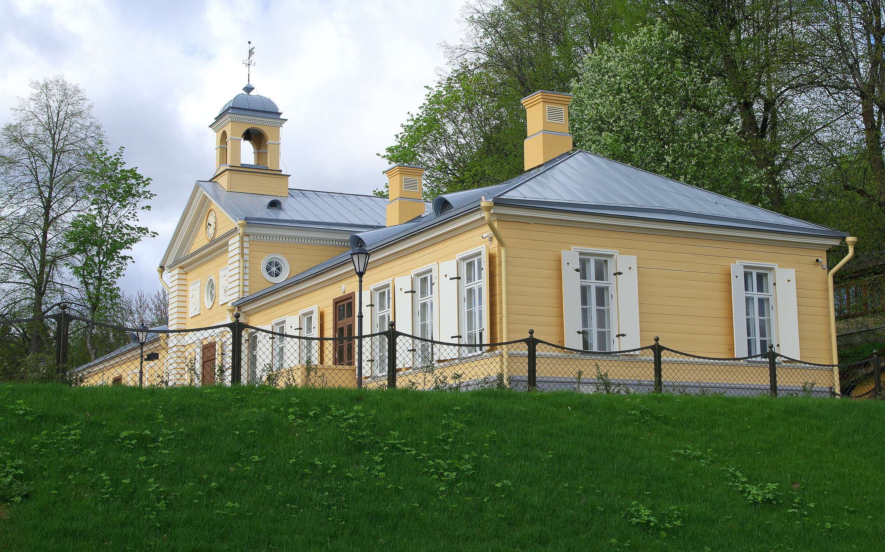

Как скромный загородный участок под Выборгом стал одним из самых известных пейзажных парков Северной Европы.

Флигель-библиотека
История Монрепо — это история нескольких владельцев, каждый из которых добавлял парку что-то своё, но бережно сохранял главное: живописную северную природу.
Больше всего для усадьбы сделала семья фон Николаи. Они владели ею почти 150 лет и превратили её в «парк-поэму», о котором писали путешественники и поэты. Ниже — основные вехи этой истории.
XVIII век
Загородная усадьба
На месте будущего парка находится небольшой загородный участок выборгских владельцев. Во второй половине века его начинают обустраивать для отдыха: появляются дом, сад и первые дорожки.
1780-е
Название «Монрепо»
Усадьба получает французское имя Mon Repos — «мой отдых». Так её называет принц Фридрих Вильгельм Карл Вюртембергский, служивший тогда в Выборге.
1788
Барон Людвиг Генрих фон Николаи
Имение покупает барон Николаи — поэт и государственный деятель. При нём складывается облик пейзажного парка: появляются павильоны, мостики и смотровые площадки.
XIX век
Расцвет усадьбы
Наследники Николаи продолжают украшать парк. Перестраивается главный дом, на острове Людвигштайн устраивается фамильный некрополь.
XX век
Смена эпох
После 1917 года Выборг входит в состав Финляндии, усадьба остаётся частной. После Второй мировой войны парк становится общественным местом отдыха.
1988
Музей-заповедник
Парку присвоен статус историко-архитектурного и природного музея-заповедника. Начинаются реставрация павильонов и восстановление исторических видов.